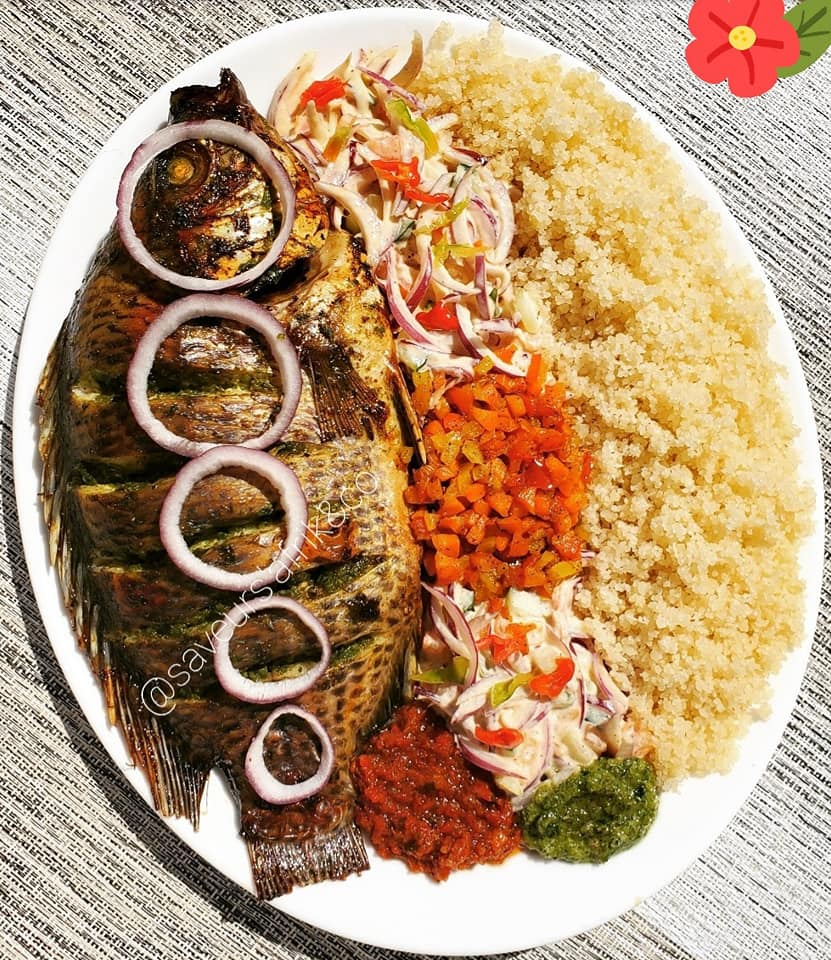

La recette attiéké

Description de la recette attiéké
L'attiéké est un plat traditionnel de Côte d'Ivoire à base de semoule de manioc, souvent
servi avec du poisson grillé, du poulet ou de la viande en sauce.
Ingrédients :
- 500g d'attiéké
- 4 filets de poisson ou 4 cuisses de poulet
- 2 oignons
- 4 tomates
- 3 citrons verts
- 2 piments
- 2 gousses d'ail
- 1/2 tasse d'huile d'arachide
- Sel et poivre
Instructions pour la réalisation du plat
- Préparez le poisson ou la viande selon votre choix (grillé, cuit en sauce, etc.) et réservez.
- Dans un grand saladier, versez l'attiéké et ajoutez de l'eau tiède pour le mouiller
légèrement. Laissez reposer pendant environ 5 minutes pour que la semoule absorbe l'eau.
- Égrainez l'attiéké avec les mains, en le frottant légèrement pour éviter les grumeaux. Réservez.
- Dans une poêle, faites chauffer l'huile d'arachide et faites revenir les oignons hachés et
l'ail écrasé pendant environ 5 minutes.
- Ajoutez les tomates coupées en dés et les piments hachés et laissez cuire pendant
environ 10 minutes, en remuant de temps en temps.
- Ajoutez le jus des citrons verts et laissez mijoter pendant encore 5 minutes.
- Versez la sauce sur l'attiéké et mélangez bien. Ajoutez du sel et du poivre à votre goût.
- Servez l'attiéké chaud, accompagné de poisson grillé, de poulet ou de viande en sauce.
Bon appétit !
Odin Recette